編輯有沒有被擋下來
量測互相矛盾：net_lpips 說防禦有效（0.08–0.12），
SigLIP 說編輯對 prompt 的服從程度沒有下降（726 格中語意失敗 0 格）。
請按數字鍵（或點按鈕）在滑鼠所在的面板上原地切換。三種切換各問一件事：
1↔2 防禦本身看不看得出來；3↔4 編輯有沒有被擋下來（本頁的主要
問題）；4↔5 JPEG 把防禦洗掉多少。判斷第二項時請看編輯的內容有沒有
照 prompt 發生，而不是兩張圖長不長得一樣——兩次擴散輸出即使都達成了
prompt 也本來就會不同，那個差異會被 net_lpips 全部記成防禦效果。
右側為 4× 最近鄰放大，位置取原圖梯度能量最高處，各版本同一座標。
car_00 · S
E23 τ=0.05、100 步 · e23_Sbic_s100_tau0.05
prompt：a wrecked car after an accident

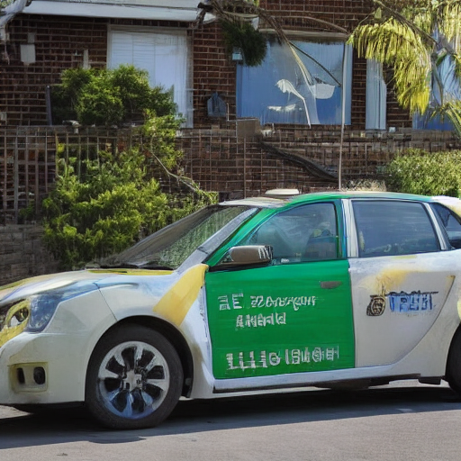


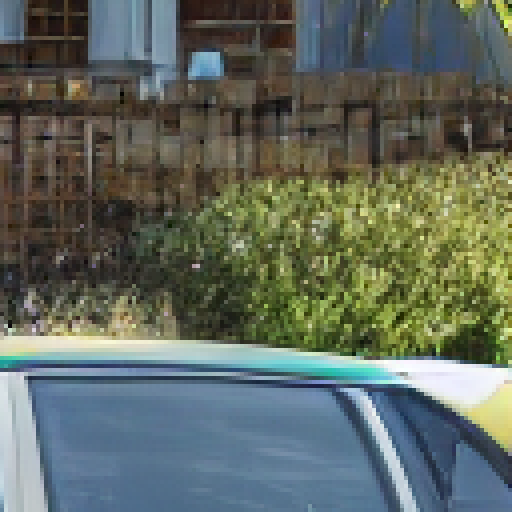
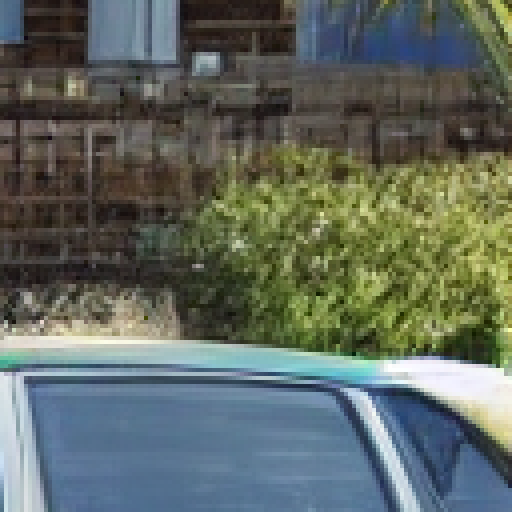
展開數值（先看圖）
| 量 | 無淨化 | JPEG 30 |
|---|
| 防禦圖對原圖 LPIPS（保真） | 0.0465 | 0.2411 |
| 防禦圖對原圖 銳利度比 | 0.9722 | 0.9469 |
| 編輯結果的 LPIPS 位移 | 0.1437 | 0.2490 |
| net_lpips（扣掉對照） | 0.1437 | 0.0310 |
| ΔSigLIP（負才是防禦） | -0.0202 | -0.0137 |
| ΔCLIP（未通過對照，僅列） | -0.0048 | 0.0151 |
car_01 · S
E23 τ=0.05、100 步 · e23_Sbic_s100_tau0.05
prompt：a wrecked car after an accident


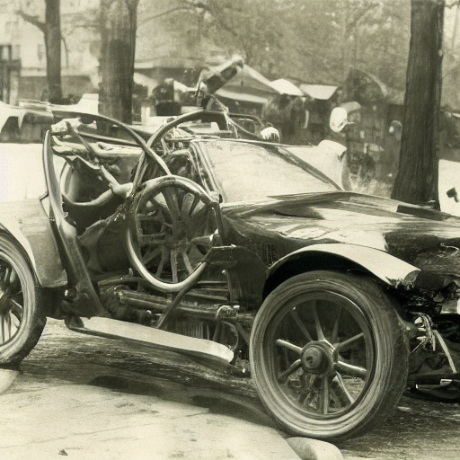
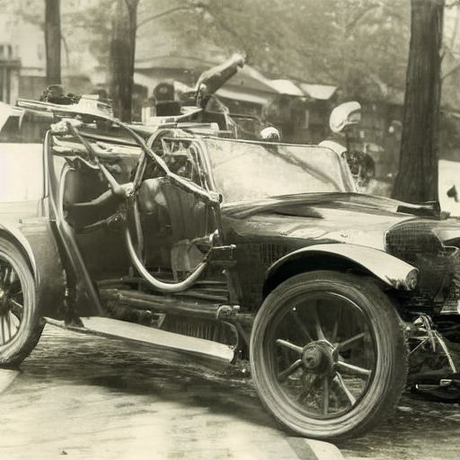

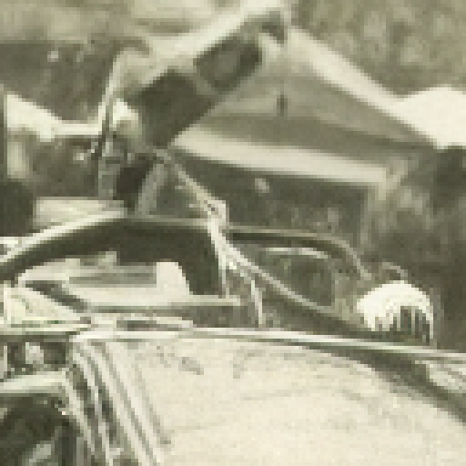
展開數值（先看圖）
| 量 | 無淨化 | JPEG 30 |
|---|
| 防禦圖對原圖 LPIPS（保真） | 0.0427 | 0.2216 |
| 防禦圖對原圖 銳利度比 | 0.9971 | 0.9751 |
| 編輯結果的 LPIPS 位移 | 0.1342 | 0.2288 |
| net_lpips（扣掉對照） | 0.1342 | 0.0502 |
| ΔSigLIP（負才是防禦） | 0.0204 | 0.0070 |
| ΔCLIP（未通過對照，僅列） | 0.0119 | -0.0130 |
dog_00 · S
E23 τ=0.05、100 步 · e23_Sbic_s100_tau0.05
prompt：a cat sitting on the grass

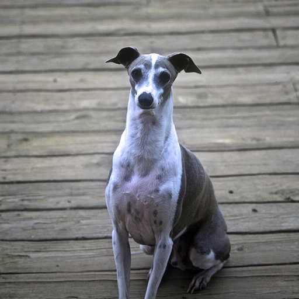


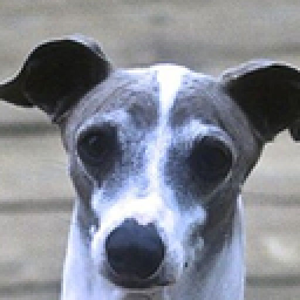
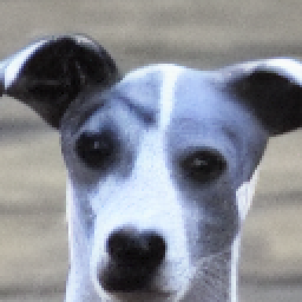
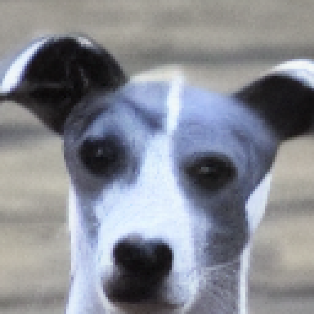
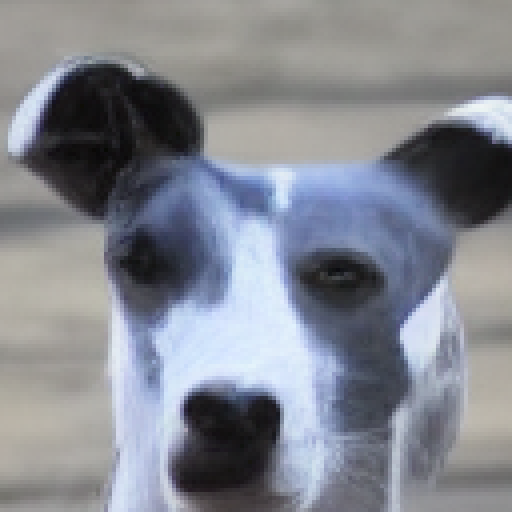
展開數值（先看圖）
| 量 | 無淨化 | JPEG 30 |
|---|
| 防禦圖對原圖 LPIPS（保真） | 0.0463 | 0.3230 |
| 防禦圖對原圖 銳利度比 | 1.0037 | 0.9743 |
| 編輯結果的 LPIPS 位移 | 0.0613 | 0.2697 |
| net_lpips（扣掉對照） | 0.0613 | 0.0184 |
| ΔSigLIP（負才是防禦） | -0.0004 | 0.0051 |
| ΔCLIP（未通過對照，僅列） | 0.0004 | 0.0139 |
dog_01 · S
E23 τ=0.05、100 步 · e23_Sbic_s100_tau0.05
prompt：a cat sitting on the grass
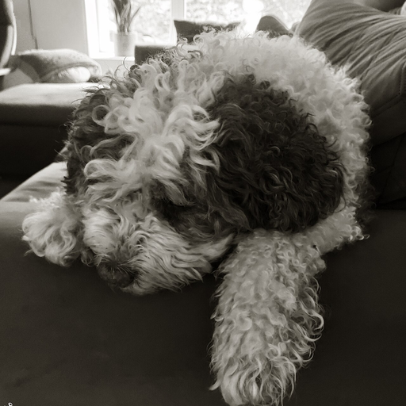
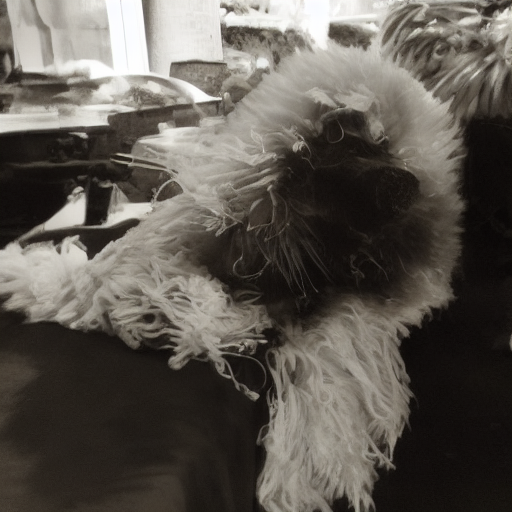
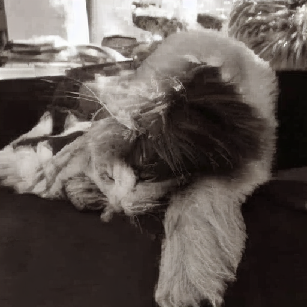

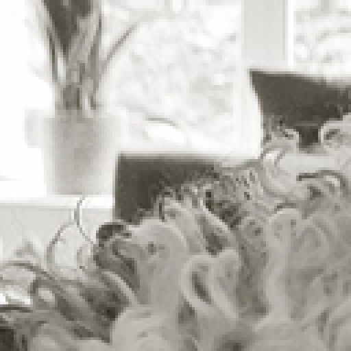

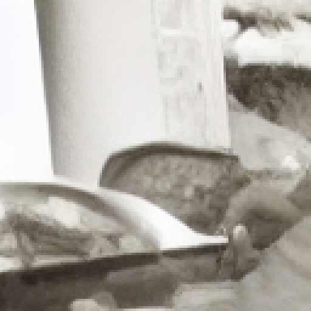
展開數值（先看圖）
| 量 | 無淨化 | JPEG 30 |
|---|
| 防禦圖對原圖 LPIPS（保真） | 0.0474 | 0.3431 |
| 防禦圖對原圖 銳利度比 | 1.0133 | 0.9875 |
| 編輯結果的 LPIPS 位移 | 0.0921 | 0.3525 |
| net_lpips（扣掉對照） | 0.0921 | 0.0218 |
| ΔSigLIP（負才是防禦） | -0.0028 | 0.0345 |
| ΔCLIP（未通過對照，僅列） | -0.0010 | 0.0450 |
person_00 · S
E23 τ=0.05、100 步 · e23_Sbic_s100_tau0.05
prompt：an elderly person with gray hair


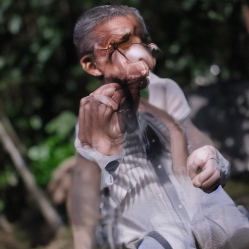


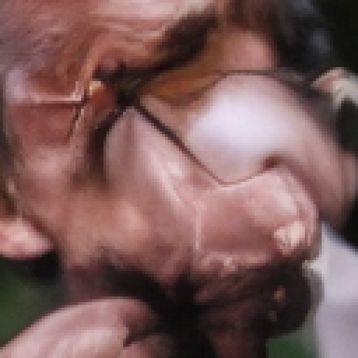
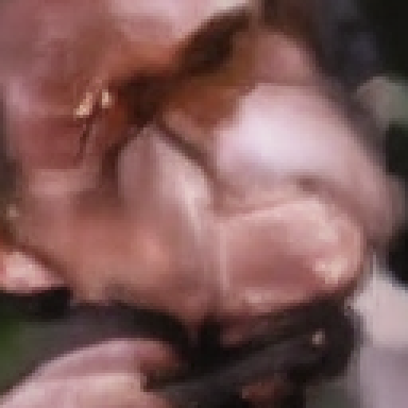
展開數值（先看圖）
| 量 | 無淨化 | JPEG 30 |
|---|
| 防禦圖對原圖 LPIPS（保真） | 0.0467 | 0.2778 |
| 防禦圖對原圖 銳利度比 | 1.0078 | 1.0069 |
| 編輯結果的 LPIPS 位移 | 0.0852 | 0.2917 |
| net_lpips（扣掉對照） | 0.0852 | 0.0203 |
| ΔSigLIP（負才是防禦） | 0.0108 | 0.0176 |
| ΔCLIP（未通過對照，僅列） | 0.0285 | 0.0114 |
person_01 · S
E23 τ=0.05、100 步 · e23_Sbic_s100_tau0.05
prompt：an elderly person with gray hair


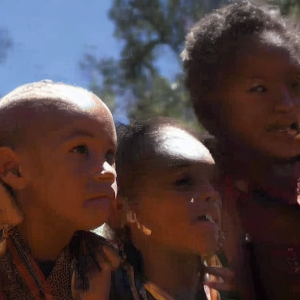

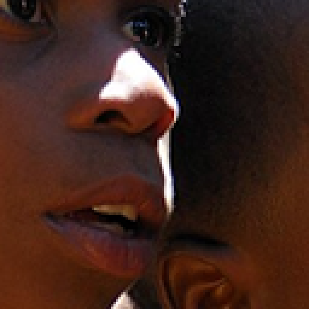

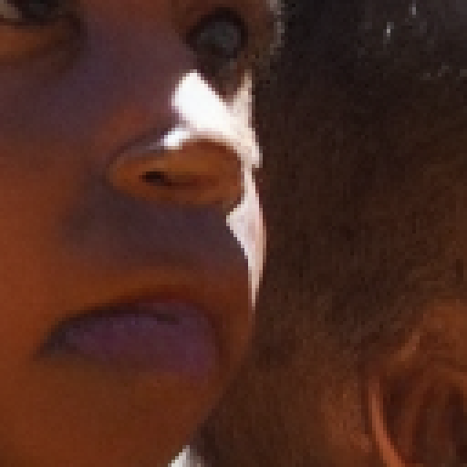
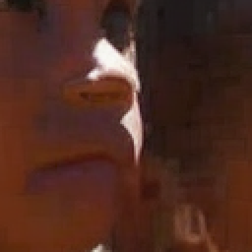
展開數值（先看圖）
| 量 | 無淨化 | JPEG 30 |
|---|
| 防禦圖對原圖 LPIPS（保真） | 0.0416 | 0.3435 |
| 防禦圖對原圖 銳利度比 | 1.0024 | 0.9443 |
| 編輯結果的 LPIPS 位移 | 0.0914 | 0.3821 |
| net_lpips（扣掉對照） | 0.0914 | -0.0043 |
| ΔSigLIP（負才是防禦） | 0.0036 | -0.0033 |
| ΔCLIP（未通過對照，僅列） | -0.0012 | -0.0009 |
car_00 · P
E23 τ=0.05、100 步 · e23_P_s100_tau0.05
prompt：a wrecked car after an accident

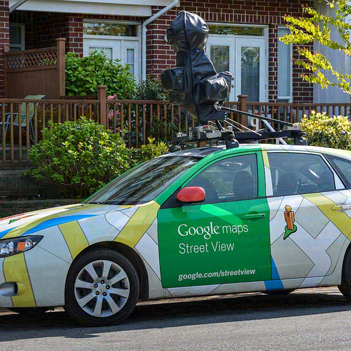


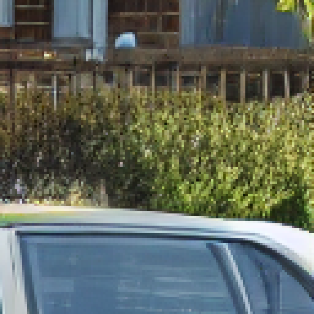
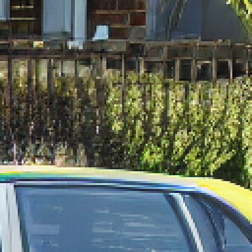
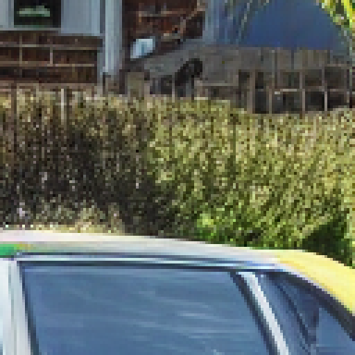
展開數值（先看圖）
| 量 | 無淨化 | JPEG 30 |
|---|
| 防禦圖對原圖 LPIPS（保真） | 0.0480 | 0.2326 |
| 防禦圖對原圖 銳利度比 | 1.0070 | 0.9839 |
| 編輯結果的 LPIPS 位移 | 0.1877 | 0.2193 |
| net_lpips（扣掉對照） | 0.1877 | 0.0013 |
| ΔSigLIP（負才是防禦） | 0.0092 | -0.0010 |
| ΔCLIP（未通過對照，僅列） | 0.0046 | 0.0014 |
car_01 · P
E23 τ=0.05、100 步 · e23_P_s100_tau0.05
prompt：a wrecked car after an accident


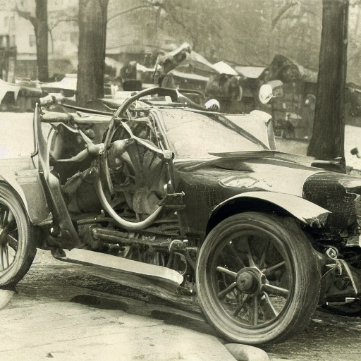
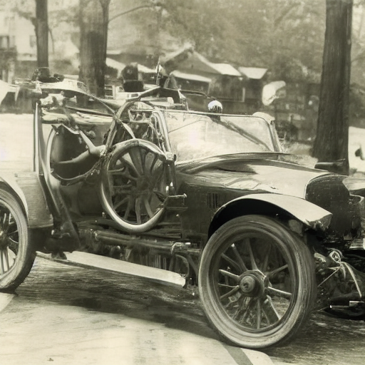
展開數值（先看圖）
| 量 | 無淨化 | JPEG 30 |
|---|
| 防禦圖對原圖 LPIPS（保真） | 0.0362 | 0.2212 |
| 防禦圖對原圖 銳利度比 | 1.0048 | 0.9858 |
| 編輯結果的 LPIPS 位移 | 0.1247 | 0.1944 |
| net_lpips（扣掉對照） | 0.1247 | 0.0158 |
| ΔSigLIP（負才是防禦） | 0.0146 | -0.0186 |
| ΔCLIP（未通過對照，僅列） | 0.0103 | -0.0234 |
dog_00 · P
E23 τ=0.05、100 步 · e23_P_s100_tau0.05
prompt：a cat sitting on the grass

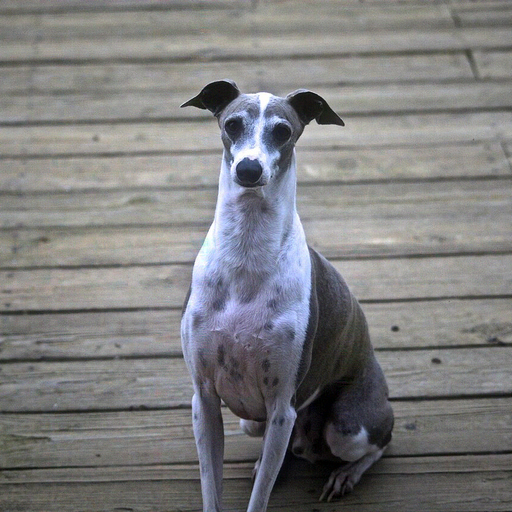

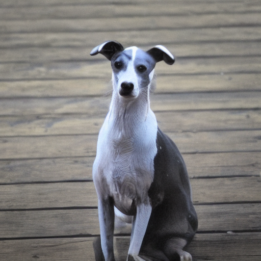
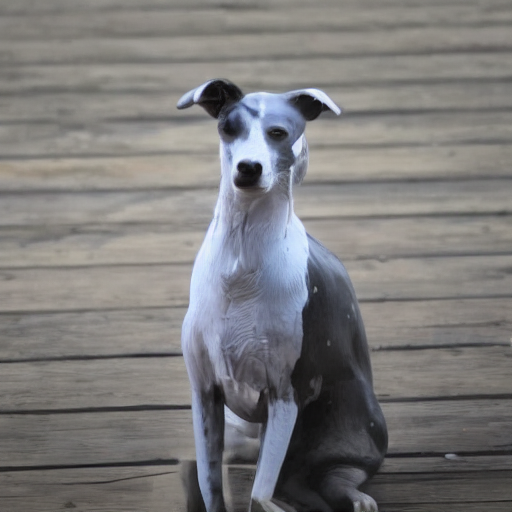

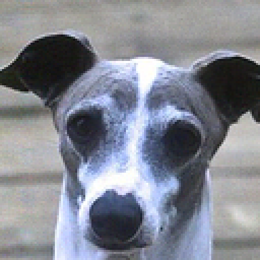

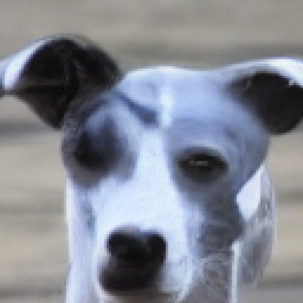
展開數值（先看圖）
| 量 | 無淨化 | JPEG 30 |
|---|
| 防禦圖對原圖 LPIPS（保真） | 0.0438 | 0.3175 |
| 防禦圖對原圖 銳利度比 | 1.0185 | 0.9780 |
| 編輯結果的 LPIPS 位移 | 0.0720 | 0.2530 |
| net_lpips（扣掉對照） | 0.0720 | 0.0017 |
| ΔSigLIP（負才是防禦） | 0.0016 | 0.0056 |
| ΔCLIP（未通過對照，僅列） | -0.0012 | 0.0042 |
dog_01 · P
E23 τ=0.05、100 步 · e23_P_s100_tau0.05
prompt：a cat sitting on the grass

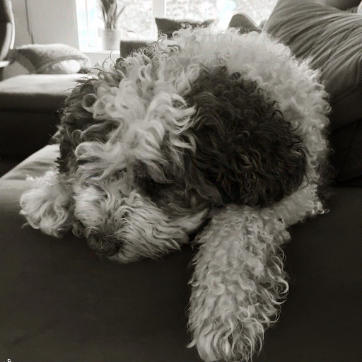

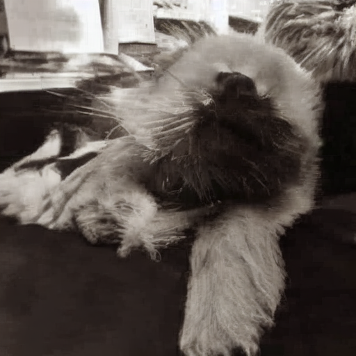

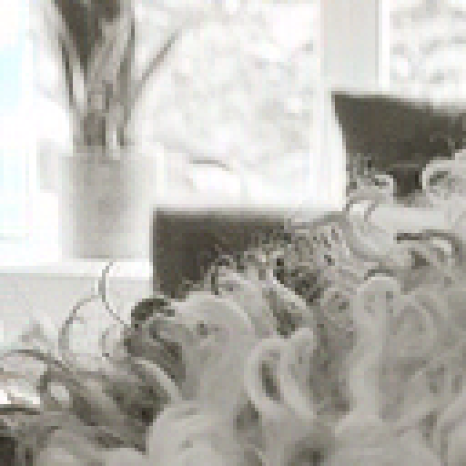

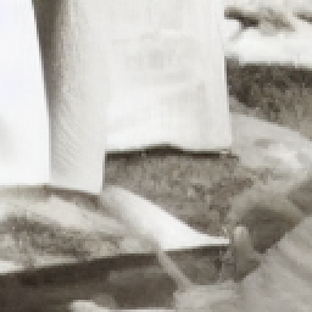
展開數值（先看圖）
| 量 | 無淨化 | JPEG 30 |
|---|
| 防禦圖對原圖 LPIPS（保真） | 0.0414 | 0.3321 |
| 防禦圖對原圖 銳利度比 | 1.0071 | 0.9782 |
| 編輯結果的 LPIPS 位移 | 0.1197 | 0.3470 |
| net_lpips（扣掉對照） | 0.1197 | 0.0162 |
| ΔSigLIP（負才是防禦） | 0.0144 | 0.0409 |
| ΔCLIP（未通過對照，僅列） | 0.0066 | 0.0302 |
person_00 · P
E23 τ=0.05、100 步 · e23_P_s100_tau0.05
prompt：an elderly person with gray hair


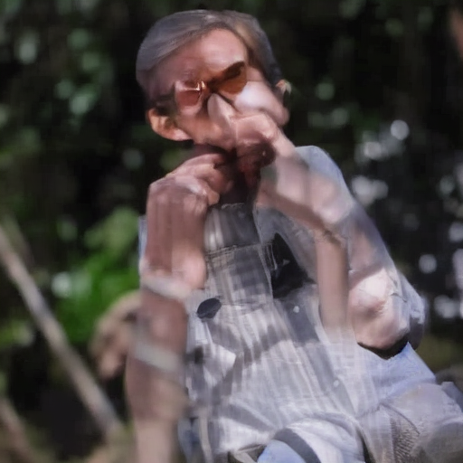

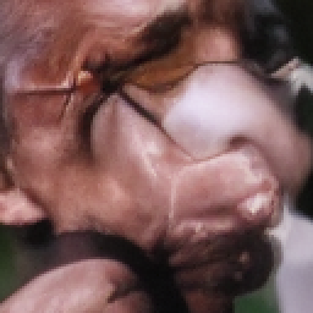
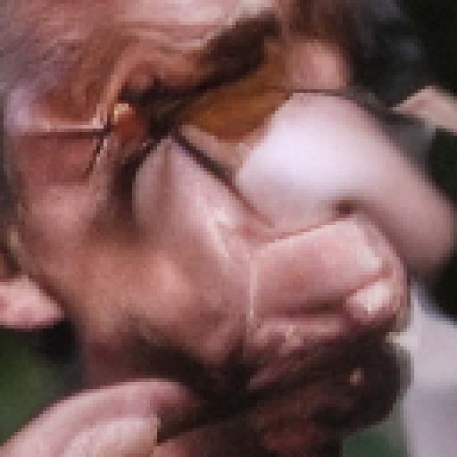
展開數值（先看圖）
| 量 | 無淨化 | JPEG 30 |
|---|
| 防禦圖對原圖 LPIPS（保真） | 0.0481 | 0.2655 |
| 防禦圖對原圖 銳利度比 | 1.0171 | 1.0066 |
| 編輯結果的 LPIPS 位移 | 0.1197 | 0.2920 |
| net_lpips（扣掉對照） | 0.1197 | 0.0206 |
| ΔSigLIP（負才是防禦） | 0.0108 | -0.0015 |
| ΔCLIP（未通過對照，僅列） | 0.0215 | 0.0027 |
person_01 · P
E23 τ=0.05、100 步 · e23_P_s100_tau0.05
prompt：an elderly person with gray hair
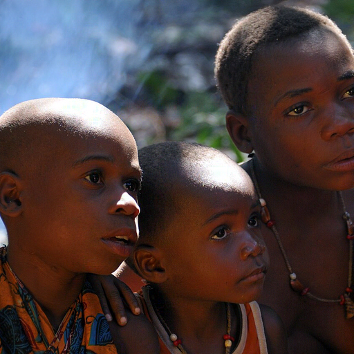

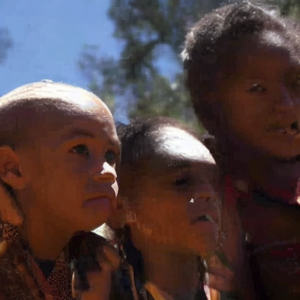

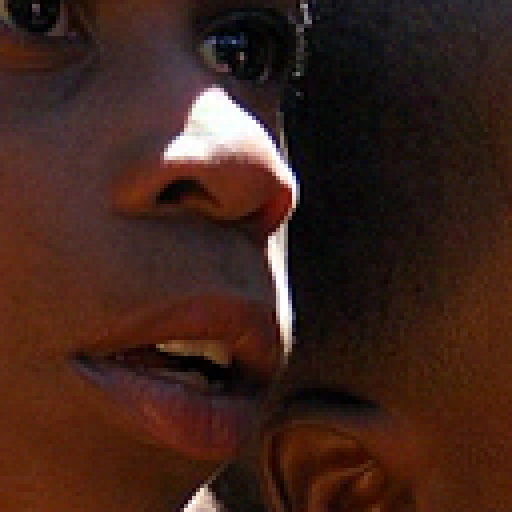
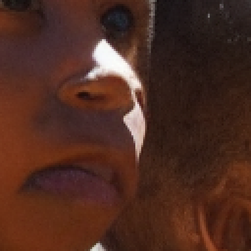
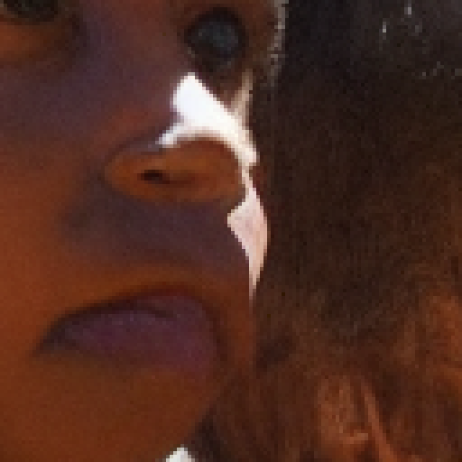
展開數值（先看圖）
| 量 | 無淨化 | JPEG 30 |
|---|
| 防禦圖對原圖 LPIPS（保真） | 0.0424 | 0.3384 |
| 防禦圖對原圖 銳利度比 | 1.0111 | 0.9420 |
| 編輯結果的 LPIPS 位移 | 0.0880 | 0.3958 |
| net_lpips（扣掉對照） | 0.0880 | 0.0095 |
| ΔSigLIP（負才是防禦） | 0.0006 | 0.0040 |
| ΔCLIP（未通過對照，僅列） | 0.0124 | 0.0023 |
car_00 · S
E21 τ=0.05、25 步 · e21_Sbic_tau0.05
prompt：a wrecked car after an accident


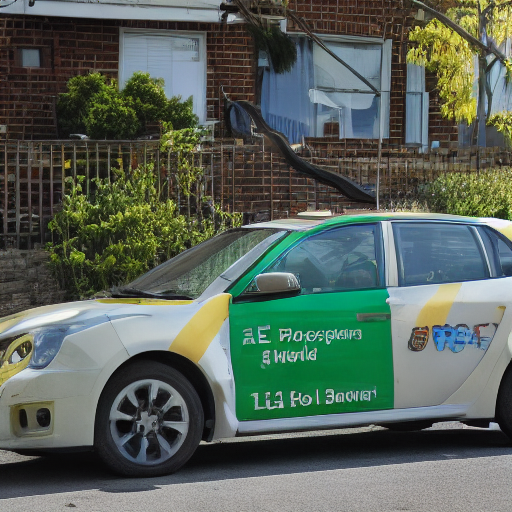
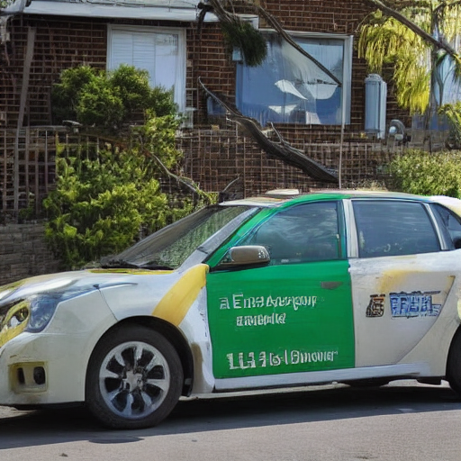

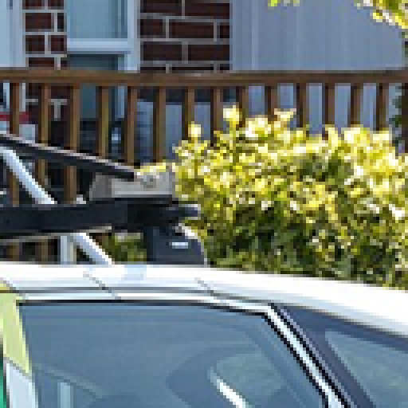

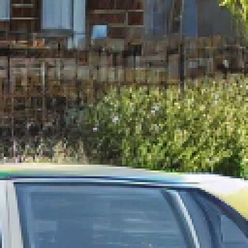
展開數值（先看圖）
| 量 | 無淨化 | JPEG 30 |
|---|
| 防禦圖對原圖 LPIPS（保真） | 0.0381 | 0.2356 |
| 防禦圖對原圖 銳利度比 | 0.9766 | 0.9529 |
| 編輯結果的 LPIPS 位移 | 0.1316 | 0.2518 |
| net_lpips（扣掉對照） | 0.1316 | 0.0338 |
| ΔSigLIP（負才是防禦） | -0.0106 | 0.0291 |
| ΔCLIP（未通過對照，僅列） | -0.0006 | 0.0087 |
car_01 · S
E21 τ=0.05、25 步 · e21_Sbic_tau0.05
prompt：a wrecked car after an accident
展開數值（先看圖）
| 量 | 無淨化 | JPEG 30 |
|---|
| 防禦圖對原圖 LPIPS（保真） | 0.0447 | 0.2247 |
| 防禦圖對原圖 銳利度比 | 0.9963 | 0.9758 |
| 編輯結果的 LPIPS 位移 | 0.1208 | 0.2084 |
| net_lpips（扣掉對照） | 0.1208 | 0.0298 |
| ΔSigLIP（負才是防禦） | 0.0287 | -0.0019 |
| ΔCLIP（未通過對照，僅列） | 0.0022 | -0.0183 |
dog_00 · S
E21 τ=0.05、25 步 · e21_Sbic_tau0.05
prompt：a cat sitting on the grass
展開數值（先看圖）
| 量 | 無淨化 | JPEG 30 |
|---|
| 防禦圖對原圖 LPIPS（保真） | 0.0439 | 0.3209 |
| 防禦圖對原圖 銳利度比 | 1.0012 | 0.9739 |
| 編輯結果的 LPIPS 位移 | 0.0644 | 0.2706 |
| net_lpips（扣掉對照） | 0.0644 | 0.0193 |
| ΔSigLIP（負才是防禦） | -0.0016 | 0.0076 |
| ΔCLIP（未通過對照，僅列） | 0.0002 | 0.0187 |
dog_01 · S
E21 τ=0.05、25 步 · e21_Sbic_tau0.05
prompt：a cat sitting on the grass
展開數值（先看圖）
| 量 | 無淨化 | JPEG 30 |
|---|
| 防禦圖對原圖 LPIPS（保真） | 0.0367 | 0.3430 |
| 防禦圖對原圖 銳利度比 | 1.0131 | 0.9874 |
| 編輯結果的 LPIPS 位移 | 0.0765 | 0.3470 |
| net_lpips（扣掉對照） | 0.0765 | 0.0163 |
| ΔSigLIP（負才是防禦） | -0.0080 | 0.0394 |
| ΔCLIP（未通過對照，僅列） | 0.0026 | 0.0404 |
person_00 · S
E21 τ=0.05、25 步 · e21_Sbic_tau0.05
prompt：an elderly person with gray hair
展開數值（先看圖）
| 量 | 無淨化 | JPEG 30 |
|---|
| 防禦圖對原圖 LPIPS（保真） | 0.0313 | 0.2663 |
| 防禦圖對原圖 銳利度比 | 1.0061 | 1.0064 |
| 編輯結果的 LPIPS 位移 | 0.0728 | 0.2800 |
| net_lpips（扣掉對照） | 0.0728 | 0.0085 |
| ΔSigLIP（負才是防禦） | 0.0110 | 0.0128 |
| ΔCLIP（未通過對照，僅列） | 0.0094 | 0.0264 |
person_01 · S
E21 τ=0.05、25 步 · e21_Sbic_tau0.05
prompt：an elderly person with gray hair
展開數值（先看圖）
| 量 | 無淨化 | JPEG 30 |
|---|
| 防禦圖對原圖 LPIPS（保真） | 0.0306 | 0.3411 |
| 防禦圖對原圖 銳利度比 | 0.9941 | 0.9454 |
| 編輯結果的 LPIPS 位移 | 0.0706 | 0.3599 |
| net_lpips（扣掉對照） | 0.0706 | -0.0265 |
| ΔSigLIP（負才是防禦） | 0.0044 | 0.0118 |
| ΔCLIP（未通過對照，僅列） | 0.0025 | -0.0065 |
car_00 · P
E21 τ=0.05、25 步 · e21_P_tau0.05
prompt：a wrecked car after an accident
展開數值（先看圖）
| 量 | 無淨化 | JPEG 30 |
|---|
| 防禦圖對原圖 LPIPS（保真） | 0.0352 | 0.2267 |
| 防禦圖對原圖 銳利度比 | 1.0018 | 0.9775 |
| 編輯結果的 LPIPS 位移 | 0.1277 | 0.2217 |
| net_lpips（扣掉對照） | 0.1277 | 0.0037 |
| ΔSigLIP（負才是防禦） | -0.0138 | -0.0181 |
| ΔCLIP（未通過對照，僅列） | 0.0036 | -0.0005 |
car_01 · P
E21 τ=0.05、25 步 · e21_P_tau0.05
prompt：a wrecked car after an accident
展開數值（先看圖）
| 量 | 無淨化 | JPEG 30 |
|---|
| 防禦圖對原圖 LPIPS（保真） | 0.0434 | 0.2164 |
| 防禦圖對原圖 銳利度比 | 1.0037 | 0.9845 |
| 編輯結果的 LPIPS 位移 | 0.0736 | 0.1829 |
| net_lpips（扣掉對照） | 0.0736 | 0.0043 |
| ΔSigLIP（負才是防禦） | -0.0055 | -0.0222 |
| ΔCLIP（未通過對照，僅列） | -0.0055 | -0.0260 |
dog_00 · P
E21 τ=0.05、25 步 · e21_P_tau0.05
prompt：a cat sitting on the grass
展開數值（先看圖）
| 量 | 無淨化 | JPEG 30 |
|---|
| 防禦圖對原圖 LPIPS（保真） | 0.0323 | 0.3153 |
| 防禦圖對原圖 銳利度比 | 1.0096 | 0.9722 |
| 編輯結果的 LPIPS 位移 | 0.0528 | 0.2533 |
| net_lpips（扣掉對照） | 0.0528 | 0.0020 |
| ΔSigLIP（負才是防禦） | -0.0025 | 0.0099 |
| ΔCLIP（未通過對照，僅列） | -0.0014 | 0.0033 |
dog_01 · P
E21 τ=0.05、25 步 · e21_P_tau0.05
prompt：a cat sitting on the grass
展開數值（先看圖）
| 量 | 無淨化 | JPEG 30 |
|---|
| 防禦圖對原圖 LPIPS（保真） | 0.0349 | 0.3318 |
| 防禦圖對原圖 銳利度比 | 1.0032 | 0.9756 |
| 編輯結果的 LPIPS 位移 | 0.0860 | 0.3388 |
| net_lpips（扣掉對照） | 0.0860 | 0.0081 |
| ΔSigLIP（負才是防禦） | 0.0311 | 0.0285 |
| ΔCLIP（未通過對照，僅列） | 0.0019 | 0.0142 |
person_00 · P
E21 τ=0.05、25 步 · e21_P_tau0.05
prompt：an elderly person with gray hair
展開數值（先看圖）
| 量 | 無淨化 | JPEG 30 |
|---|
| 防禦圖對原圖 LPIPS（保真） | 0.0376 | 0.2638 |
| 防禦圖對原圖 銳利度比 | 1.0120 | 1.0055 |
| 編輯結果的 LPIPS 位移 | 0.0798 | 0.2808 |
| net_lpips（扣掉對照） | 0.0798 | 0.0094 |
| ΔSigLIP（負才是防禦） | 0.0114 | -0.0039 |
| ΔCLIP（未通過對照，僅列） | 0.0300 | 0.0067 |
person_01 · P
E21 τ=0.05、25 步 · e21_P_tau0.05
prompt：an elderly person with gray hair
展開數值（先看圖）
| 量 | 無淨化 | JPEG 30 |
|---|
| 防禦圖對原圖 LPIPS（保真） | 0.0348 | 0.3414 |
| 防禦圖對原圖 銳利度比 | 1.0085 | 0.9428 |
| 編輯結果的 LPIPS 位移 | 0.0507 | 0.3836 |
| net_lpips（扣掉對照） | 0.0507 | -0.0027 |
| ΔSigLIP（負才是防禦） | -0.0020 | 0.0258 |
| ΔCLIP（未通過對照，僅列） | 0.0027 | -0.0010 |